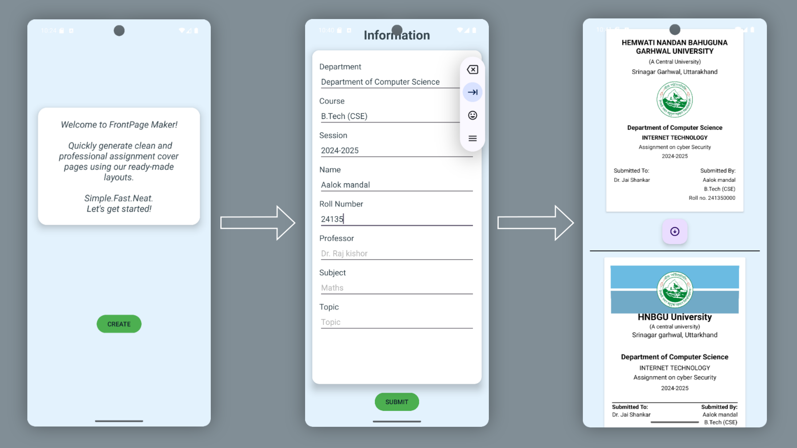

Front page maker
Create front page some basic
Front Page Maker is a simple Android app built using Kotlin and XML layouts. It allows users to
generate clean, predefined assignment front pages by entering basic details like name, subject,
and roll number. The app uses Bitmap and Canvas APIs in Kotlin to draw the front page and
automatically saves it to the device's gallery as an image. Fast, offline, and
user-friendly—perfect for students who need quick assignment covers.
Online news reader
Gets current news from Newsdata.io
A modern Android news app built using Jetpack Compose, Hilt, Retrofit, and Kotlin
Coroutines. It fetches the latest tech headlines from the NewsData.io API and displays them in a
clean, scrollable UI with article thumbnails, titles, and descriptions. The app follows MVVM
architecture with Jetpack ViewModel and uses Coil's AsyncImage for efficient image loading, all
styled using Material3 for a responsive and polished experience.